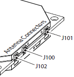

The Antenna tab allows to change the tracking antenna type used by the connected receiver (either Internal, External, or Auto) if the connected receiver is capable of tracking satellites with internal and external antennas. You can setup the following parameters.
Current Input – shows the antenna type currently used with the connected receiver: Internal or External.
GNSS antenna – sets the type of the currently used antenna.
| • | Internal – the internal antenna of the receiver will be used. |
| • | External – the external antenna of the receiver will be used. |
| • | Auto – the antenna will be selected automatically as soon as the receiver is enabled. |
| • | No Overload - the antenna draws normal current or is not connected to the receiver. |
For B210 OEM board:
| • | J100 connector corresponds to the Internal antenna. |
| • | J101 connector corresponds to the External antenna. |

For MR-1 receiver, OEM-1 and B 210 OEM boards, you can enable the heading and inclination measurements using the twin antenna system. To do this, check the Activate Twin Antenna System check box on the tab.